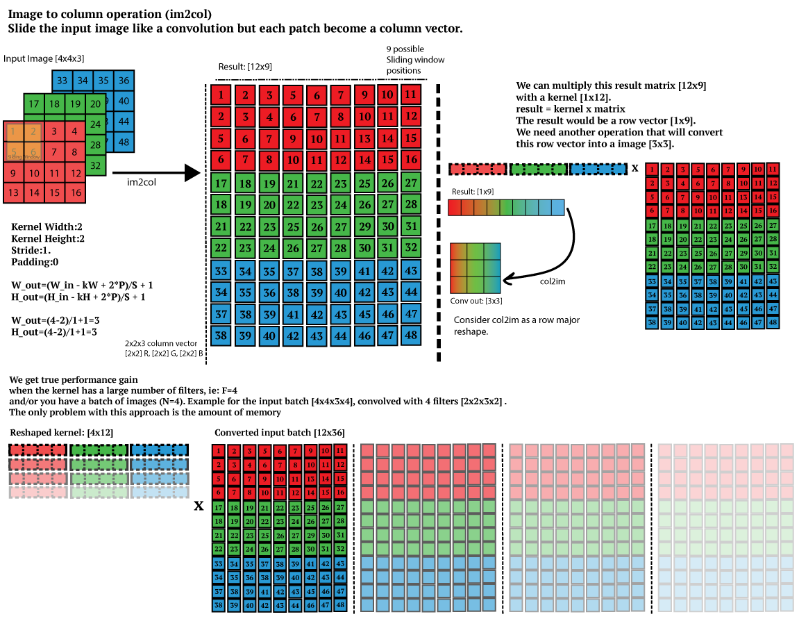

Input Blocks¶
Im2col¶
Systolic arrays arranged in a regular square (or rectangular) grid are matmul (or gemm) machines. I.e. they can perform matrix multiplications. Convolution on the other hand is a dot-product based operation. Ergo, it is not possible to take a 3x3 kernel, for example, and a 3x3 section of a input (as one would in convolution), feed it to the systolic array and expect the correct result.
There is a need for a transformation that would allow us to carry out a convolution operation on a matmul engine. This transformation is im2col
{kind=link}

The above image shows the im2col operation for a input of 3 channels, size 4x4 with a 2x2 kernel to the left. The expanded matrix is made of columns of 4 (2*2), and are the elements from the input matrix where the 2x2 kernel lands and slides. Thus, the expanded matrix has 9 columns as the kernel has 9 unique sliding locations. The number of rows is decided by the size of the kernel and the number of channels. In this case, 2 * 2 * 3, gives 12 which is the total number of rows in the complete expanded matrix for all channels.
Explicit im2col¶
There are two glaring problems with im2col:
It requires time (increasing the latency of computation)
It requires space (which implies the use of secondary storage, DRAM, for example)
Since, systolic arrays cannot be used directly to carry out convolution, im2col is a necessary evil.
The naïve way to carry out im2col is design a block on the FPGA that does it explitcy, stores the entire expanded matrix somewhere and feed it back to the array. This design can be made slightly more optimal than it sounds by pipelining the process. The biggest drawback here is that the entire input has been expanded even though the systolic array can only consume some of it at a time.
This leads us to want an algorithm that dynamically expands its inputs. It shall only expand as much data as needed. This tackles both the time and space problem that explicit algorithm creates. This is the so-called implicit im2col algorithm.
Two people in the design team serendipitously invented two algorithms for implicitly carrying out im2col transformation, here they are:
Bounding Squares Algorithm¶
When using systolic array to accelerate CNNs, we cannot operate on image directly. Instead we need to perform a transformation first called image to column or commonly called im2col.
The bounding squares algorithm is thus:
Index to co-ordinate conversion: The first sub-block of im2col where the input data will be getting its respective coordinate (i.e. rows and column).
valid_squares_param: Index to coordinate conversion block is followed by valid squares block, here if the below nine conditions are satisfied valid bits will go high and that gives the number of squares in which an element would be part of. The size of the kernel is 3*3 so we can expect each patch of the image to have 9 blocks/coordinates enclosed within it and so the 9 various conditions. The square is considered to be a valid one if the filter that is covering that patch of the image is within the image boundary i.e. 224x224-matrix size.
Check If (x,y) is greater than 1 and if the input co-ordinate is bounded between (x,y) and (x+2,y+2). If so valid[0] goes high.
Now from (x,y), go one row above i.e. (x-1,y) and check if input co-ordinate is bounded between (x-1,y) and (x+1,y+2). if so valid[1] goes high.
Now from (x,y) we go two rows above i.e. (x-2,y) and check if input co-ordinate is bounded between (x-2,y) and (x,y+2). if so valid[2] goes high.
Then from (x,y) we go one column behind i.e. (x,y-1) and check if input co-ordinate is bounded between (x,y-1) and (x+2,y+1). if so valid[3] goes high.
Then from (x,y-1) we go one row above i.e. (x-1,y-1) and check if input co-ordinate is bounded between (x-1,y-1) and (x+1,y+1). if so valid[4] goes high.
Then from (x,y-1) we go two rows above i.e. (x-2,y-1) and check if input co-ordinate is bounded between (x-2,y-1) and (x,y+1). if so valid[5] goes high.
Now from (x,y) we go two columns behind i.e. (x,y-2) and check if input co-ordinate is bounded between (x,y-2) and (x+2,y). if so valid[6] goes high.
Then from (x,y-2) we go one row above i.e. (x-1,y-2) and check if input co-ordinate is bounded between (x-1,y-2) and (x+1,y). if so valid[7] goes high.
Then from (x,y-2) we go two rows above i.e. (x-2,y-2) and check if input co-ordinate is bounded between (x-2,y-2) and (x,y). if so valid[8] goes high.
Valid Rows: The last sub-block of the module, here the nine rows are assigned with constant values form 1 to 9 when the patch of the image is converted into its corresponding column, it’d yield us 9 rows, hence 9 rows are driven. Of these 9 rows few can be valid which is given by the valid_sq_o.
Note that incoming data to im2col is in row-major format. Following the above three steps, data is then staged in input FIFOs of each engine. Input FIFOs are required to stage the ready data temporarily till all FIFOs have at least one element; only then input FIFOset at each engine will be issued a read. The data is then pushed into the engine for convolution operation.
Coordgen Algorithm¶
Consider a convolution of 4x4 input with a 2x2 kernel. We require 4 inputs to be generated at a timestep. For the first timestep, the inputs required are values at at co-ordinates .. code:
(0,0) 0 0 0
the zeros are padded as the SA only consumes 1 element in the fist timestep. This is followed by the arrays made of: .. code:
(0,1) (0,1) 0 0
(0,2) (0,2) (1,0) 0
and so on. The numbers inside the brackets are co-ordinates indexing a matrix and are replaced by their values.
Definitions¶
lsfe: last slide first element.
the first element of the last sliding position of a kernel.
for a 2x2 kernel on 4x4 input, all the co-ordinates with
co-ordinates of the second last column are lsfe.
lsme: last slide middle element all the elements b/w first
element and last of the last sliding position of a kernel
for 4x4 kernel on 6x6 input, co-ordinates with y values = 4,5
lsle: last slide last element all elements of the last column
The Algorithm¶
int previous[4];
int current[4];
while (1) {
for (i = 0 to 4) {
if (is_lsfe(previous[i]) && first_lsfe)
current[i] = (previous[i].x + 1, 1)
else if (is_lsme(previous[i]) && first_lsme)
current[i] = previous[i]
else if (is_lsle(previous[i]))
current[i] = previous[i]
else
current[i] = (previous[i].x, previous[i].y + 1)
}
}
Explanation¶
Start with two buffers ‘previous’ and ‘current’ of co-ordinates (x,y)
iterate over current buffer.
during each iteration, compare current buffer’s co-ordinates to previous buffer’s at the same index
if its lsfe, increment the x value of previous buffer and set y to 1 and only do this once for a buffer.
if its lsme, copy the value to the left of the current buffer and only do this once for a buffer.
if its lsle, copy the value to the left of the current buffer
after iteration, replace co-ordinates in current buf to their corresponding values
copy current buf’s contents of previous buf.
Here’s a complete set of vectors as generated by this algorithm for 2x2 kernel on a 4x4 input:
0,0 0,0 0,0 0,0
0,1 0,1 0,0 0,0
0,2 0,2 1,0 0,0
0,3 0,3 1,1 1,1
0,4 0,4 1,2 1,2
1,0 0,5 1,3 1,3
1,1 1,1 1,4 1,4
1,2 1,2 2,0 1,5
1,3 1,3 2,1 2,1
1,4 1,4 2,2 2,2
2,0 1,5 2,3 2,3
2,1 2,1 2,4 2,4
2,2 2,2 3,0 2,5
0,0 2,3 3,1 3,1
0,0 0,0 3,2 3,2
0,0 0,0 0,0 3,3
Weights¶
Request weights from DRAM in the available bandwidth of DRAM. weight FIFOset has 64 FIFOs.On a DRAM read request, the incoming 32 bytes are evenly distributed amoung first 32 FIFOs, one byte for one FIFO. Second read request is distributed among rest 32 FIFOs.
Loading weights happens scarecly in CNN. As there are FIFOs storing weights, one can pre-fetch a lot in background. Thus, the weight block ends up not being a big contributor to stall penalties.
Bias¶
Biases are scalar values that are added to the Ofmap of a layer. These are runtime constants that must be loaded into the block from the DRAM.